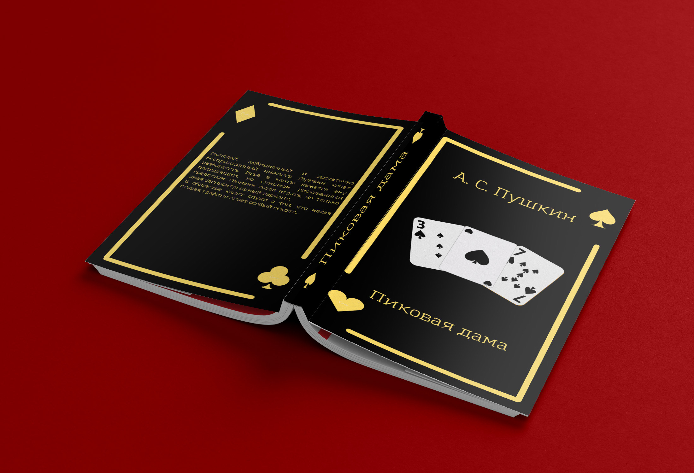
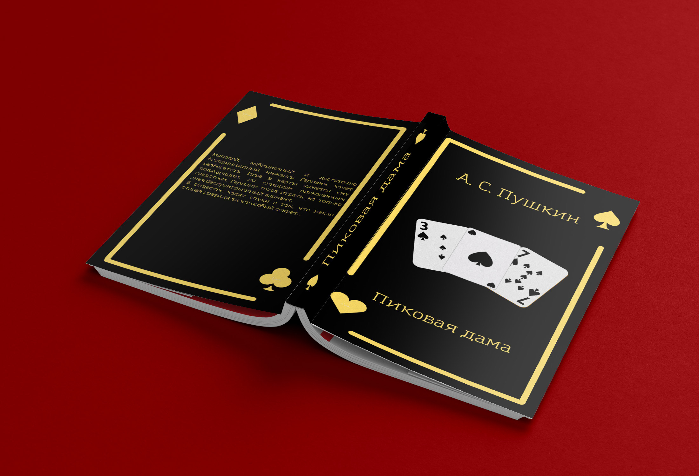

Зин по игре UNO
В рамках DOKA был создан зин по карточной игре UNO, как небольшая инструкция по ней.
Смотреть проектЯ закончила МКИК, живу и работаю в Москве.
Работаю над разработкой печатной продукции, занимаюсь книжной и журнальной версткой.
t.me/ll_mw 

В рамках DOKA был создан зин по карточной игре UNO, как небольшая инструкция по ней.
Смотреть проектКнига для детей от 6 лет. Сказка о необычном цветке и мальчике-озорнике. Однажды мать мальчика принесла попугая, который не только умел разговаривать, но и решил чему-то учить мальчика.
Смотреть проект